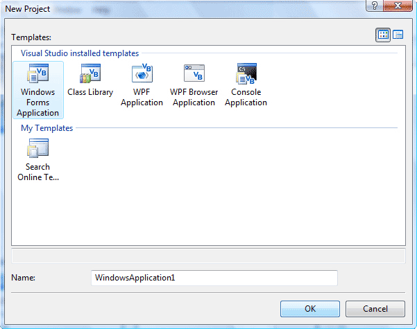
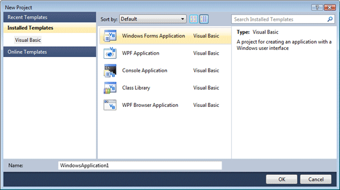
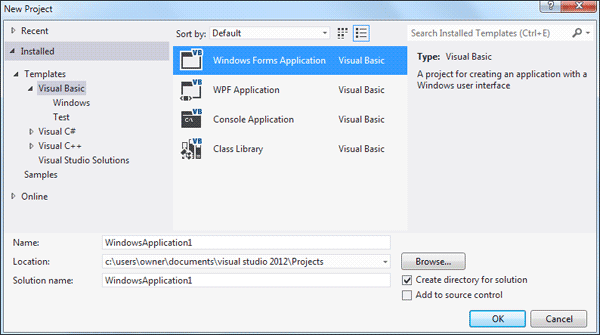

Getting Started with Visual Basic .NET
Launch your Visual Basic .NET or Visual Studio software. When the software first loads, you'll see a screen something like this one, if you have the 2008 version:
VB NET 2008 ( new popup window - 86K )
Or this one, for VB NET 2010 users:
VBNET 2010 ( new popup window - 86K )
If you have VB NET 2012, your opening screen will look like this:
VBNET 2012 ( new popup window - 40K )
There's a lot happening on the start page. But basically, this is where you can start a new project, or open an existing one. The first Tab, Projects, is selected. At the moment, the area labelled "Open an Existing Project" is blank. This is what you'll see when you run the software for the first time (because you haven't created a project yet). When you create a project, the Name you gave it will be displayed on this page, as a hyperlink. Clicking the link will open the project.
At the bottom of the screen, there are two buttons: "New Project" and "Open Project". To get started, click the "New Project" button. When you do, you'll see this dialogue box appear in the version 2008:

Or this one for version 2010:

In the 2012 version, you'll see this:

As a beginner, you'll normally want the option selected: "Windows Application", in the "Visual Basic Projects" folder. This means that you're going to be designing a programme to run on a computer running the Microsoft Windows operating system.
If you look in the Name textbox at the bottom, you'll see it says "WindowsApplication1". This is the default name for your projects. It's not a good idea to keep this name. After all, you don't want all of your projects to be called "WindowsApplication1", "WindowsApplication2", etc. So click inside this textbox and change this Name to the following:
My First Project
Keep the Location the same as the default. This is a folder inside of your "My Documents" folder called "Visual Studio Projects". A new folder will then be created for you, and its name will be the one you typed in the "Name" textbox. All of your files for your first project are then saved in this folder.
Click the OK button, and the Visual Basic NET design time environment will open. It will look like the following (version 2008):
VB NET 2008 Software - new popup window (28K)
Or this, in version 2010:
VB NET 2010 Software - new popup window (28K)
The Design environment in VB NET 2012 is this:
VB NET 2012 Software - new popup window (28K)
That's a very daunting piece of software, hey? Well, don't worry. We'll break it down bit by bit in the next few sections, and pretty soon you'll be zipping your way around it like a pro!